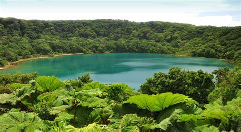
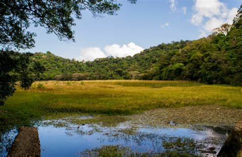

LAGUNA DE LAS NINFAS
|
Es un lago ubicado en el Cerro de las Ninfas, Ahuachapán, exactamente en Apaneca en la cordillera Apaneca-Lamatepec. Su ubicación es sobre el cráter alterno del volcán del mismo departamento, o mejor dicho, en un cráter lateral. El cantón San Ramoncito es el que se beneficia de la valiosa agua fresca que proviene de esta laguna, la cual dicho sea de paso se encuentra a 1,640 snm en altura. Por lo que el clima del lugar es bastante húmedo y fresco, no solo por su altura claro está, sino por el bosque nebuloso que le rodea, y de parcelas de cultivos de café. |
 |
Si a esto le sumamos la neblina que se forma, la vegetación sobre la superficie del agua y la gran variedad de especies animales, le convierten en un lugar muy pero muy especial y único en el país.Según datos del Ministerio de Turismo, el tamaño de la laguna de Las Ninfas es de aproximadamente 600 metros cuadrados y según el MARN, en cuanto a temperatura ambiental, (Ver: Artículo principal sobre Apaneca) se oscila de 14° a 17° centígrados; por lo que es bastante "helado" si se compara con muchos lugares de El Salvador, con algunas excepciones por supuesto, como partes de Chalatenango, solo por citar algunas.
|  |
Recibe el nombre "Laguna de las ninfas" debido a la cantidad de ninfas que hay en la superficie del agua. Por si no conoces esta planta, es una planta acuática que pertenece al género Nymphaea, género que cuenta con alrededor de 17 tipos diferentes; pero en cuanto al tipo o tipos que hay en la laguna, no tenemos información precisa. Además, sobre su vegetación circundante, el bosque cuenta con alrededor de 15 especies de orquídeas, bastantes helechos y árboles propicios para un clima bastante húmedo y fresco. Este no suele ser un sitio turístico explotado y lo mejor es que siga siendo así, pero si deseas visitarla, lleva bolsa de plástico donde puedas echar toda la basura que se genere en el viaje, y por que no, también recoger basura que pueda haber en el lugar y así dejes mejor la Laguna de las Ninfas en comparación a como la encontraste. |